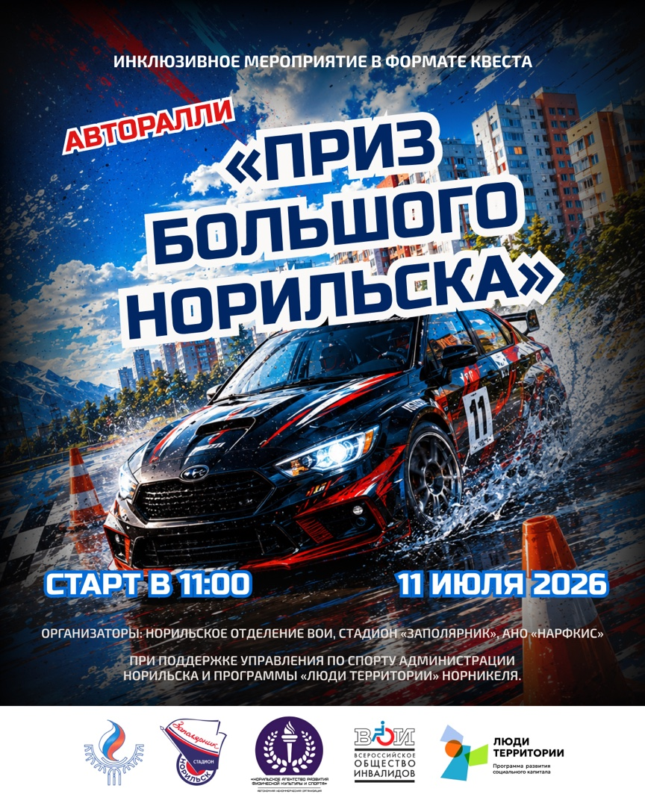
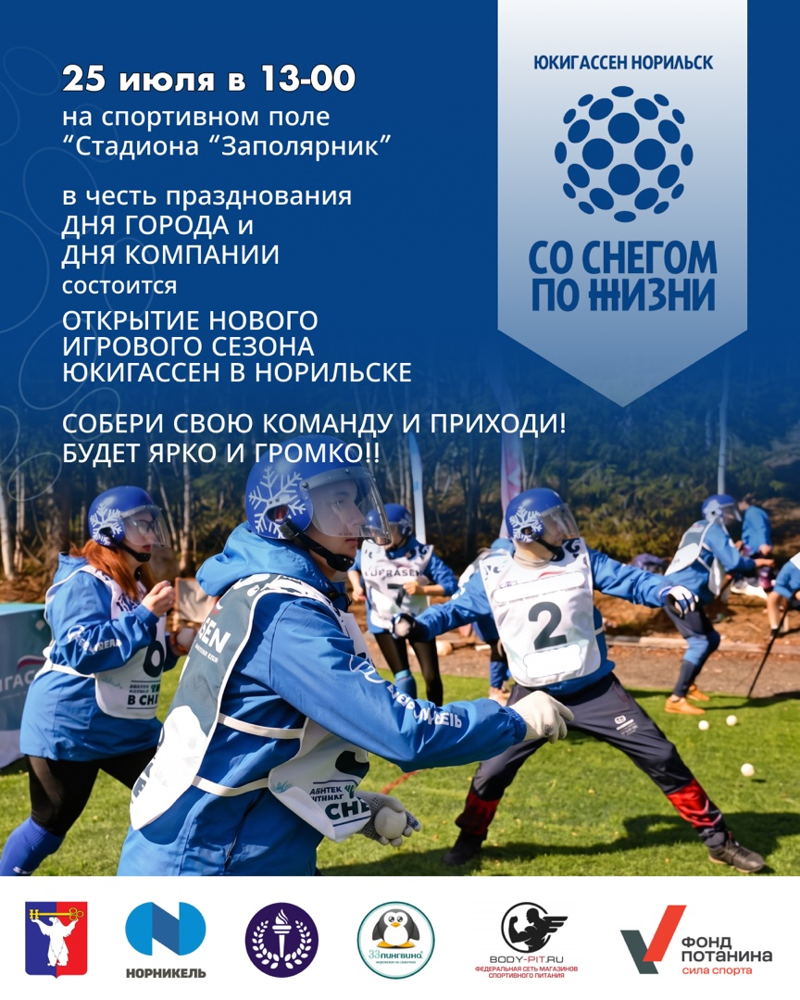
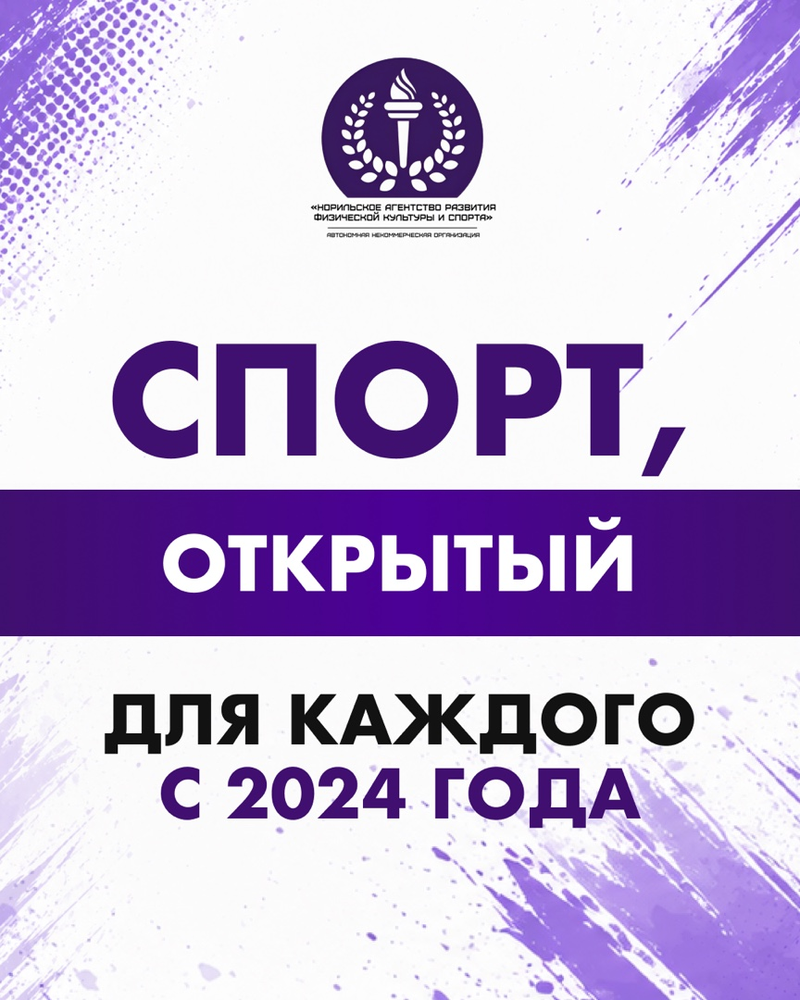

Инклюзивный спорт · ВКонтакте + MAX · июль 2026
Как собрать месяц контента вокруг реальных спортивных событий
Для NARFKiS подготовили 10 постов и мини-прогрев из 5 сторис: анонсы, понятные объяснения новых игр, отчётные материалы и работа с барьерами аудитории.
Первый пакет утверждён и передан в процесс публикации. Фактический выход каждого материала и показатели после публикации не подтверждены — поэтому охваты, заявки и другие метрики здесь не заявлены.



Маркетинговая задача
Не просто сообщить дату, а помочь человеку решиться прийти
Для новой спортивной игры одного афишного поста мало. Аудитории надо понять правила, увидеть, что участие действительно доступно, и почувствовать доверие к организатору.
Что спрашивает аудитория
«А мне вообще можно участвовать?»
Что такое юкигассен?
Нужна подготовка?
Где проходят игры?
Это доступно людям с ОВЗ?
Как заявить команду?
Что делает контент
Ведёт от интереса к понятному следующему шагу
Месяц построен как маршрут: событие привлекает внимание, полезный материал объясняет механику, разбор мифа снимает страх, а отчёт и история бренда добавляют доверия.
Логика месяца
Пять ролей, которые работают вместе
Темы не повторяют один и тот же призыв. Каждая пара публикаций решает отдельную задачу внутри общего пути аудитории.
Конкретное событие
Дата, формат и яркая причина обратить внимание прямо сейчас.
Новая игра
Простые правила вместо незнакомого спортивного термина.
Разбор мифа
Участие не требует идеальной формы или специального статуса.
Реальные события
Отчёты и проекты клиента показывают, что работа происходит на деле.
История бренда
Человек понимает, кто развивает направление и зачем.
Анонса событий
Авторалли и открытие сезона.
Полезных поста
Правила и новые форматы игр.
Разбора мифов
Доступность спорта и города.
Материала о проектах
События и организация под ключ.
Публикации о бренде
Причины и принципы работы.
Продукт целиком
Все 10 постов и весь мини-прогрев
Откройте план, соберите ленту целиком или пролистайте связную серию сторис. Все изображения показаны без обрезки.
Утверждённая последовательность
10 тем — от афиши до истории бренда
Формат первого месяца — одиночные посты 4:5. У каждого материала есть своя роль, а не только новый заголовок.
Полная лента
10 макетов в единой системе 4:5
Нажмите на любой пост, чтобы открыть его целиком. Для сайта исходники нормализованы до одного размера без изменения пропорций.
Мини-прогрев · 5 кадров
Один связный рассказ, а не пять случайных картинок
Серия ведёт от интриги к объяснению игры, затем даёт дату и переводит человека к основному посту.
Прогрев к открытию сезона
Юкигассен становится понятным за пять свайпов
1 / 5
Как дошли до финала
В карточке виден не только результат, но и работа с правкой
Срочный анонс сделали раньше основного пакета. Затем прошли план, визуал, точечное исправление и финальное согласование.
- 01Приоритетный анонсготово
Первый пост подготовили раньше остального пакета из-за близкой даты события.
- 02Контент-план и текстыготово
Собрали 10 тем и отдельную серию сторис.
- 03Проверка визуалаготово
Для части материалов сравнили светлый и тёмный варианты.
- 04Точечная правкавнесено
В афишу добавили ещё один партнёрский логотип и повторно проверили макет.
- 05Согласованиеутверждено
Финальный пакет подтвердили и передали в публикационный процесс.
Передача в публикацию подтверждена. Сам факт выхода каждого поста в ВКонтакте и MAX отдельно не зафиксирован.
Продолжение сотрудничества
Клиент подтвердил следующий заказ
Новый пакет находится на согласовании текстов. Мы показываем это только как подтверждение продолжения работы — второй месяц не включён в готовый результат и не выдаётся за завершённый.
Границы доказательств
Сильный кейс без придуманных результатов
Здесь подтверждены объём, логика, финальные материалы, правка и согласование. Этого достаточно, чтобы оценить работу lemonmedia честно.
Что подтверждено
- 10 одиночных постов формата 4:5;
- мини-прогрев из 5 сторис формата 9:16;
- контент-план для ВКонтакте и MAX;
- срочный пост сделан раньше основного пакета;
- правка партнёрского логотипа внесена;
- пакет утверждён и передан в публикацию.
Чего мы не заявляем
Нет подтверждённых данных о фактическом выходе всех 15 материалов, охватах, заявках, участниках или росте аудитории.
Спортивные мероприятия, грантовые проекты и публикации СМИ — результаты деятельности клиента, а не бизнес-результаты lemonmedia.
У вашего бизнеса тоже много событий, но нет системы?
Соберём месяц контента в понятный маршрут для аудитории
Маркетолог выстраивает логику, команда готовит тексты и дизайн, а менеджер проводит пакет через согласование и передачу в публикацию.